CRYPTO 现代密码学入门指北 1 2 3 4 5 6 7 8 9 10 11 12 13 14 15 16 17 18 from Crypto.Util.number import bytes_to_long, getPrime from secret import flag p = getPrime(128) q = getPrime(128) n = p*q e = 65537 m = bytes_to_long(flag) c = pow(m, e, n) print(f"n = {n}") print(f"p = {p}") print(f"q = {q}") print(f"c = {c}") ''' n = 40600296529065757616876034307502386207424439675894291036278463517602256790833 p = 197380555956482914197022424175976066223 q = 205695522197318297682903544013139543071 c = 36450632910287169149899281952743051320560762944710752155402435752196566406306 ```
1 2 3 4 5 6 7 8 9 10 11 12 13 from Crypto.Util.number import long_to_bytes import gmpy2 n = 40600296529065757616876034307502386207424439675894291036278463517602256790833 p = 197380555956482914197022424175976066223 q = 205695522197318297682903544013139543071 c = 36450632910287169149899281952743051320560762944710752155402435752196566406306 e = 65537 phi = (p-1)*(q-1) d = gmpy2.invert( e , phi ) m = pow( c , d , n ) print( long_to_bytes(m) )
flag:moectf{the_way_to_crypto}
Signin 1 2 3 4 5 6 7 8 9 10 11 12 13 14 15 16 17 18 19 20 21 22 23 24 25 26 27 from Crypto.Util.number import* from secret import flag m = bytes_to_long(flag) p = getPrime(1024) q = getPrime(1024) n = p*q e = 65537 c = pow(m,e,n) pq = (p-1)*(q-2) qp = (q-1)*(p-2) p_q = p + q print(f"{c = }") print(f"{pq = }") print(f"{qp = }") print(f"{n = }") print(f"{p_q = }") ''' c = 5654386228732582062836480859915557858019553457231956237167652323191768422394980061906028416785155458721240012614551996577092521454960121688179565370052222983096211611352630963027300416387011219744891121506834201808533675072141450111382372702075488292867077512403293072053681315714857246273046785264966933854754543533442866929316042885151966997466549713023923528666038905359773392516627983694351534177829247262148749867874156066768643169675380054673701641774814655290118723774060082161615682005335103074445205806731112430609256580951996554318845128022415956933291151825345962528562570998777860222407032989708801549746 pq = 18047017539289114275195019384090026530425758236625347121394903879980914618669633902668100353788910470141976640337675700570573127020693081175961988571621759711122062452192526924744760561788625702044632350319245961013430665853071569777307047934247268954386678746085438134169871118814865536503043639618655569687154230787854196153067547938936776488741864214499155892870610823979739278296501074632962069426593691194105670021035337609896886690049677222778251559566664735419100459953672218523709852732976706321086266274840999100037702428847290063111455101343033924136386513077951516363739936487970952511422443500922412450462 qp = 18047017539289114275195019384090026530425758236625347121394903879980914618669633902668100353788910470141976640337675700570573127020693081175961988571621759711122062452192526924744760561788625702044632350319245961013430665853071569777307047934247268954386678746085438134169871118814865536503043639618655569687077087914198877794354459669808240133383828356379423767736753506794441545506312066344576298453957064590180141648690226266236642320508613544047037110363523129966437840660693885863331837516125853621802358973786440314619135781324447765480391038912783714312479080029167695447650048419230865326299964671353746764860 n = 18047017539289114275195019384090026530425758236625347121394903879980914618669633902668100353788910470141976640337675700570573127020693081175961988571621759711122062452192526924744760561788625702044632350319245961013430665853071569777307047934247268954386678746085438134169871118814865536503043639618655569687534959910892789661065614807265825078942931717855566686073463382398417205648946713373617006449901977718981043020664616841303517708207413215548110294271101267236070252015782044263961319221848136717220979435486850254298686692230935985442120369913666939804135884857831857184001072678312992442792825575636200505903 p_q = 279533706577501791569740668595544511920056954944184570513187478007551195831693428589898548339751066551225424790534556602157835468618845221423643972870671556362200734472399328046960316064864571163851111207448753697980178391430044714097464866523838747053135392202848167518870720149808055682621080992998747265496 '''
设 $q_p = p - q$
因为 $pq=(p-1)(q-2)\ qp = (q-1) (p-2)$
即 $pq=pq-2 p-1q+2\ qp = p q-1p-2 q+2$
两式相减得到 $pq-qp=-p+q$ ，即 $q_p=-p+q$
又已知 $p_q = p + q$
只需解方程二元一次方程 $\left{\begin{array}{lr }q_p=-p+q\p_q = p + q\end{array}\right.$ ，其中 $q_p , p_q$ 为已知量，$p,q$为未知量
1 2 3 4 5 6 7 8 9 10 11 12 13 14 15 16 17 18 19 20 21 from Crypto.Util.number import* import gmpy2 c = pq = qp = n = p_q = e = 65537 q_p = pq - qp p = (p_q + q_p)//2 q = (p_q - q_p)//2 assert p*q==n phi = (p-1)*(q-1) d = gmpy2.invert( e , phi ) m = pow( c , d , n ) print( long_to_bytes(m) )
flag:moectf{Just_4_signin_ch4ll3ng3_for_y0u}
ez_hash 1 2 3 4 5 6 7 8 from hashlib import sha256 from secret import flag, secrets assert flag == b'moectf{' + secrets + b'}' assert secrets[:4] == b'2100' and len(secrets) == 10 hash_value = sha256(secrets).hexdigest() print(f"{hash_value = }") # hash_value = '3a5137149f705e4da1bf6742e62c018e3f7a1784ceebcb0030656a2b42f50b6a'
已知密文前四位（共10位）和sha256后的结果，爆破剩余6位即可得到flag
1 2 3 4 5 6 7 8 9 10 from hashlib import sha256 secrets = b'2100' for i in range( 1000000 ): tmp = secrets + str(i).encode() # print( tmp ) hash_value = sha256(tmp).hexdigest() #print( tmp , hash_value ) if hash_value == '3a5137149f705e4da1bf6742e62c018e3f7a1784ceebcb0030656a2b42f50b6a': print( tmp )
flag:moectf{2100360168}
Big and small 1 2 3 4 5 6 7 8 9 10 11 12 13 from secret import flag from Crypto.Util.number import* m = long_to_bytes(flag) p = getPrime(1024) q = getPrime(1024) n = p*q e = 3 c = pow(m,e,n) ''' c = 150409620528288093947185249913242033500530715593845912018225648212915478065982806112747164334970339684262757 e = 3 n = 20279309983698966932589436610174513524888616098014944133902125993694471293062261713076591251054086174169670848598415548609375570643330808663804049384020949389856831520202461767497906977295453545771698220639545101966866003886108320987081153619862170206953817850993602202650467676163476075276351519648193219850062278314841385459627485588891326899019745457679891867632849975694274064320723175687748633644074614068978098629566677125696150343248924059801632081514235975357906763251498042129457546586971828204136347260818828746304688911632041538714834683709493303900837361850396599138626509382069186433843547745480160634787 '''
低密度指数攻击
1 2 3 4 5 6 7 8 9 10 11 12 from Crypto.Util.number import* import gmpy2 c = e = 3 n = for i in range( 100 ): if gmpy2.iroot( c+n*i , e )[1] == True: m = gmpy2.iroot( c+n*i , e )[0] print( long_to_bytes(m) ) exit()
flag:flag{xt>is>s>b}
baby_equation 1 2 3 4 5 6 7 8 9 10 from Crypto.Util.number import * from secret import flag l = len(flag) m1, m2 = flag[:l//2], flag[l//2:] a = bytes_to_long(m1) b = bytes_to_long(m2) k = 0x2227e398fc6ffcf5159863a345df85ba50d6845f8c06747769fee78f598e7cb1bcf875fb9e5a69ddd39da950f21cb49581c3487c29b7c61da0f584c32ea21ce1edda7f09a6e4c3ae3b4c8c12002bb2dfd0951037d3773a216e209900e51c7d78a0066aa9a387b068acbd4fb3168e915f306ba40 assert ((a**2 + 1)*(b**2 + 1) - 2*(a - b)*(a*b - 1)) == 4*(k + a*b)
这一组题里最难的一题
已知 ((a**2 + 1)*(b**2 + 1) - 2*(a - b)*(a*b - 1)) == 4*(k + a*b)
可以使用python自带库来解方程
1 2 3 4 5 6 from sympy import symbols, Eq, solve k = 0x2227e398fc6ffcf5159863a345df85ba50d6845f8c06747769fee78f598e7cb1bcf875fb9e5a69ddd39da950f21cb49581c3487c29b7c61da0f584c32ea21ce1edda7f09a6e4c3ae3b4c8c12002bb2dfd0951037d3773a216e209900e51c7d78a0066aa9a387b068acbd4fb3168e915f306ba40 a , b = symbols('a b') eq1 = Eq( (a**2 + 1)*(b**2 + 1) - 2*(a - b)*(a*b - 1) - 4*(k + a*b) , 0 ) solution = solve( eq1 , (a,b) ) print( solution )
得到结果是
1 [((8699621268124163273600280057569065643071518478496234908779966583664908604557271908267773859706827828901385412151814796018448555312901260593 - b)/(b - 1), b), ((-b - 8699621268124163273600280057569065643071518478496234908779966583664908604557271908267773859706827828901385412151814796018448555312901260591)/(b - 1), b)]
我们先只看前半段
((8699621268124163273600280057569065643071518478496234908779966583664908604557271908267773859706827828901385412151814796018448555312901260593 - b)/(b - 1), b)
设 t=8699621268124163273600280057569065643071518478496234908779966583664908604557271908267773859706827828901385412151814796018448555312901260593
故有 $((t-b)/(b-1),b)$
设 $a=((t-b)/(b-1),b)$
移项得到 $t=a*b-a+b$
上式等价于 $t-1=(a+1)*(b-1)$
使用 yafu-x64即可分解 t-1得到
1 2 3 4 5 6 7 8 9 10 11 12 13 14 15 16 17 18 19 20 21 22 ***factors found*** P1 = 2 P1 = 2 P1 = 2 P1 = 2 P1 = 3 P1 = 3 P2 = 31 P2 = 61 P3 = 223 P4 = 4013 P6 = 281317 P7 = 4151351 P13 = 5404604441993 P9 = 370523737 P9 = 339386329 P14 = 26798471753993 P29 = 25866088332911027256931479223 P44 = 64889106213996537255229963986303510188999911 ans = 1
也就是说，以上十八个数字分成两组，这两组数分别的乘积就是 $a+1$ 和 $b-1$，而且这两组数的乘积相差较小（即 $a$ 和 $b$ 的相差较小）；我们不妨设答案的解是相差最小 的一组
考虑一个长度为 18 的 01串 ，0表示分到一组，1表示分到另一组，依次可以编写代码
1 2 3 4 5 6 7 8 9 10 11 12 13 14 15 16 17 18 19 20 21 22 23 24 25 26 27 28 29 30 31 32 33 34 35 36 37 38 39 40 def generate_binary_strings(n, current_string='', index=0): """ 递归生成所有长度为n的01串，并计算两个子集的乘积。 :param n: 01串的长度 :param current_string: 当前构建的01串 :param index: 当前构建01串的位置 :return: 最小的乘积差值和对应的两个子集的乘积 """ if index == n: # 当生成了一个完整的01串时，计算两个子集的乘积 subset1_product = 1 subset2_product = 1 for i in range(n): if current_string[i] == '1': subset1_product *= numbers[i] else: subset2_product *= numbers[i] # 计算两个子集乘积的差值 diff = abs(subset1_product - subset2_product) return diff, (subset1_product, subset2_product) # 递归生成下一个位为0的情况 diff_0, result_0 = generate_binary_strings(n, current_string + '0', index + 1) # 递归生成下一个位为1的情况 diff_1, result_1 = generate_binary_strings(n, current_string + '1', index + 1) # 返回乘积差更小的那个情况 if diff_0 < diff_1: return diff_0, result_0 else: return diff_1, result_1 numbers = [2,2,2,2,3,3,31,61,223,4013,281317,4151351,339386329,370523737,5404604441993,26798471753993,25866088332911027256931479223,64889106213996537255229963986303510188999911] diff, (product1, product2) = generate_binary_strings(len(numbers)) print(f"最小差距是{diff}") print(f"a={product1}") print(f"b={product2}")
得到的结果是
1 2 3 最小差距是1706794914313264370032744337649343424996898390647397437784379904184 a=2948658764987911698882278955266869405625105496652193856947916257370492 b=2950365559902224963252311699604518749050102395042841254385700637274676
计算 $a+1$ 和 $b-1$ 即可得到 flag
1 2 3 4 from Crypto.Util.number import * a = 2948658764987911698882278955266869405625105496652193856947916257370492 + 1 b = 2950365559902224963252311699604518749050102395042841254385700637274676 - 1 print( long_to_bytes(b) + long_to_bytes(a) )
flag:moectf{7he_Fund4m3nt4l_th30r3m_0f_4rithm3tic_i5_p0w4rful!}
大白兔 More_secure_RSA ezlegendre 1 2 3 4 5 6 7 8 9 10 11 12 13 14 15 16 17 18 19 20 21 22 23 from sympy import * from Crypto.Util.number import * a = 288260533169915 p = 1007621497415251 FLAG = b'moectf{xxxxxxxxxxxxxxxxxxxxx}' def encrypt_flag(flag): ciphertext = [] plaintext = ''.join([bin(i)[2:].zfill(8) for i in flag]) for b in plaintext: e = randprime(2, p) if b == '1': n = pow(a, -e, p) ciphertext.append(n) else: n = pow(-a, e ,p) ciphertext.append(n) return ciphertext print(encrypt_flag(FLAG))
离散对数的题还挺爱出
此题和
1 2 [DASCTF Sept X 浙江工业大学秋季挑战赛]签到 2020网鼎杯——you_raise_me_up wp
这两道题考点一致
直接出代码了
1 2 3 4 5 6 7 8 9 10 11 12 13 14 15 16 17 18 19 20 from sympy import * from Crypto.Util.number import * a = 288260533169915 p = 1007621497415251 def decode_flag( ciphertext ): plaintext = "" for i in ciphertext: try: e_temp = discrete_log( p , i , a ) except: plaintext += "0" else: plaintext += "1" if len(plaintext) == 8: print( chr(int(plaintext,2)) , end="" ) plaintext = "" Ciphertext = [] print(decode_flag(Ciphertext))
flag:moectf{minus_one_1s_n0t_qu4dr4tic_r4sidu4_when_p_mod_f0ur_equ41_to_thr33}
new_system RE 逆向工程入门指北 直接运行题目给的脚本即可
1 2 3 4 5 6 7 8 9 10 11 12 13 14 15 16 #include <iostream> int main() { char password_enc[] = { 123, 121, 115, 117, 98, 112, 109, 100, 37, 96, 37, 100, 101, 37, 73, 39, 101, 73, 119, 73, 122, 121, 120, 113, 73, 122, 121, 120, 113, 73, 97, 119, 111, 73, 98, 121, 73, 115, 110, 102, 122, 121, 100, 115, 107, 22 }; // 因为a^b=c时, b^c=a, 所以我们可以这样还原数据: char password[47]; for (int i = 0; i < 46; i++) { password[i] = password_enc[i] ^ 22; } password[46] = 0; // 使用0字符来截断掉%s的无尽输出.. printf("%s\n", password); // 哈哈，这就是本题的f l a g，自己运行一下交上去吧！ return 0; }
flag:moectf{r3v3rs3_1s_a_long_long_way_to_explore}
xor 打开IDA，F5
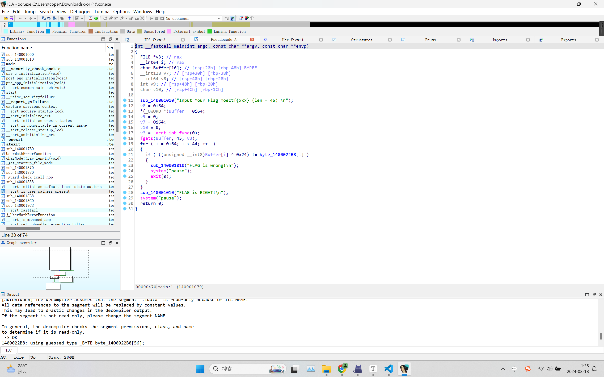
双击byte_1400022B8进入
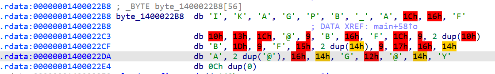
这一串异或上0x24就是flag
1 2 3 4 5 6 7 8 9 s = "49h, 4Bh, 41h, 47h, 50h, 42h, 5Fh, 41h, 1Ch, 16h, 46h , 10h, 13h, 1Ch, 40h, 9, 42h, 16h, 46h, 1Ch, 9, 10h, 10h, 42h, 1Dh, 9, 46h, 15h, 14h, 14h, 9, 17h, 16h, 14h, 41h, 40h , 40h , 16h, 14h, 47h, 12h, 40h, 14h, 59h , 0" s = s.replace("h","").replace(" ","").split(",") print( s ) for i in s: t = int(i,16) print( chr(t^0x24) , end="" )
flag:moectf{e82b478d-f2b8-44f9-b100-320edd20c6d0}
TEA 64位无壳，拖进IDA F5一下
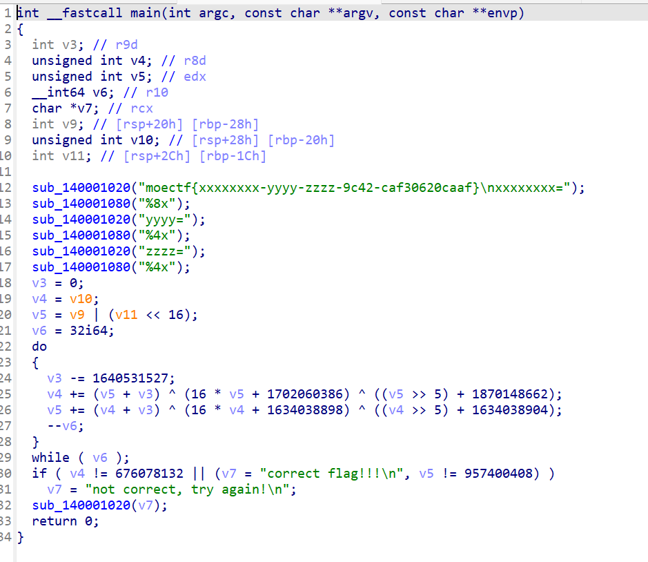
根据题目给出信息，倒过来就是decode代码了；需要注意运算的数域，这里我们直接使用cpp就可以省去手动取模
1 2 3 4 5 6 7 8 9 10 11 12 13 14 15 16 17 18 19 20 #include<iostream> using namespace std; unsigned int v4 , v5; int v3; signed main(){ v4 = 676078132; v5 = 957400408; v3 = 0; for(int i = 0;i < 32;i ++){ v3 -= 1640531527; } for(int i = 0;i < 32;i ++){ v5 -= (v4 + v3) ^ (16 * v4 + 1634038898) ^ ((v4 >> 5) + 1634038904); v4 -= (v5 + v3) ^ (16 * v5 + 1702060386) ^ ((v5 >> 5) + 1870148662); v3 += 1640531527; } cout << v4 << " " << v5 << endl; return 0; }
得到2204193701 2382383549
然后转用python分离就可以了；需要注意这里是16进制
1 2 3 4 5 6 7 8 v4 = 2204193701 v5 = 2382383549 v10 = v4 v9 = int(bin(v5)[18:34],2) v11 = int(bin(v5)[2:18],2) print( hex(v4) , hex(v11) , hex(v9) )
输出0x836153a5 0x8e00 0x49bd
得到的就是flag
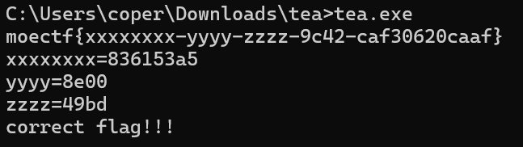
flag:moectf{836153a5-8e00-49bd-9c42-caf30620caaf}
逆向工程进阶之北 给出这样一段代码
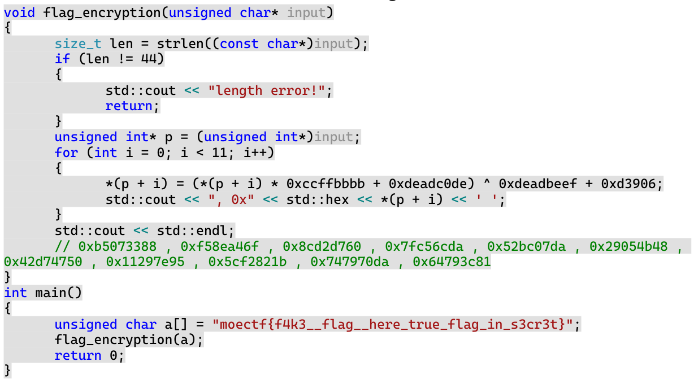
关键是这一行
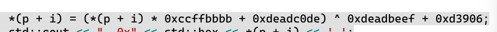
直接加法变减法，乘法变逆元，异或变异或即可
值得注意的是，加法的优先级高于异或运算，并且需要在 0xffffffff+1 域下进行运算
1 2 3 4 5 6 7 8 9 10 11 import gmpy2 l = [0xb5073388 , 0xf58ea46f , 0x8cd2d760 , 0x7fc56cda , 0x52bc07da , 0x29054b48 , 0x42d74750 , 0x11297e95 , 0x5cf2821b , 0x747970da , 0x64793c81] p = 0xffffffff+1 for i in l: temp = ((i^0xdeadbeef+0xd3906)-0xdeadc0de)*gmpy2.invert( 0xccffbbbb , p ) % p temp = str(hex(temp))[2:] flag = "" for j in range(0,len(temp),2): flag += chr(int(temp[j] + temp[j+1],16)) print( flag[::-1] , end="" )
flag:moectf{c5f44c32-cbb9-444e-aef4-c0fa7c7a6b7a}
SecretModule 给了一个zip，解压得到几个文件
用记事本打开 customize.sh 文件，得到
1 2 #!/bin/bash eval "$( printf 'QlpoOTFBWSZTWZspxEUAAfxfgFAwdef/6zfHz6D/79/uQAJSu07tCQ1BI09E9Q0DINA9TQA2oAAA0NAlCFPRpM0mjSNR+hIaek0AHqaGj1PUNNMeqDSEJ6gNBo0NNAAZNGjI0NBoAAlEjEo8ppp6NPVGCaaNNMR6g9EBoPUGgPAecJO66TH6u4xdFeH8fRdR4OSNOqLoVm2I39FZSS/irDMIJmggh2EyQovQos26HmeniQH4iRSw0JeeVV2C9E8NkJh+VZwioAZj5QpGcdTmdOSMoYLaiaaa8oZEhIRgQbKjP7VIopzl53axe+MJxXTyrg/duKuBYecUVQUUTMptuykt+JqZZmJSM0dQ/YaHpifbwN3wN0NYRAEYC0tkI6uE4GkS9r1eFB9zyCBef6dnGYwKo8BylS24xNYsXSUXIYpZC3fzxlQKVBUwrBawin+AaDPkLwbCSQNge45QjrBfoNLEJSWk8C0ajKPu8NORzYlfqGgjOQOQQ0YG7gCRaWFD6wkguEqEUi6bSFTxLE4Y3+pziYRKFVet5X1CrnXc2jLN+9tMTJ8beC0ED5k1K7n22efCha1ci53zQHgQBUKLg1Q3hPZoMCAp0g48QN02037Qy891pyxa+vZU5msKnsJryCXKyBdrCrWXljrC/S6i3MBzRikY4kZzLw7v8aL7oOYKGRkUCWxelwUWFKIOQyImQVnIKicgYFqJYjeY1CMSgaiR4dqQ7MomJ6LdpOEtDOvfhjsEplnGTvSo3NV1KnALfTTYMeOUngApQKa8IExBIGZhafHgZZjI0HAKg6bcV5QwiUHCoorQaSWUvNMLgejbZ/QJA9QFWitiup+KyAU5uTergMVuJ5jj/xdyRThQkJspxEU=' | base64 -d | bunzip2 -c )"
编写相应的解码代码
1 2 3 4 5 6 7 8 9 10 11 12 13 14 import base64 import bz2 # 这是原始的 Base64 编码字符串 encoded_str = 'QlpoOTFBWSZTWZspxEUAAfxfgFAwdef/6zfHz6D/79/uQAJSu07tCQ1BI09E9Q0DINA9TQA2oAAA0NAlCFPRpM0mjSNR+hIaek0AHqaGj1PUNNMeqDSEJ6gNBo0NNAAZNGjI0NBoAAlEjEo8ppp6NPVGCaaNNMR6g9EBoPUGgPAecJO66TH6u4xdFeH8fRdR4OSNOqLoVm2I39FZSS/irDMIJmggh2EyQovQos26HmeniQH4iRSw0JeeVV2C9E8NkJh+VZwioAZj5QpGcdTmdOSMoYLaiaaa8oZEhIRgQbKjP7VIopzl53axe+MJxXTyrg/duKuBYecUVQUUTMptuykt+JqZZmJSM0dQ/YaHpifbwN3wN0NYRAEYC0tkI6uE4GkS9r1eFB9zyCBef6dnGYwKo8BylS24xNYsXSUXIYpZC3fzxlQKVBUwrBawin+AaDPkLwbCSQNge45QjrBfoNLEJSWk8C0ajKPu8NORzYlfqGgjOQOQQ0YG7gCRaWFD6wkguEqEUi6bSFTxLE4Y3+pziYRKFVet5X1CrnXc2jLN+9tMTJ8beC0ED5k1K7n22efCha1ci53zQHgQBUKLg1Q3hPZoMCAp0g48QN02037Qy891pyxa+vZU5msKnsJryCXKyBdrCrWXljrC/S6i3MBzRikY4kZzLw7v8aL7oOYKGRkUCWxelwUWFKIOQyImQVnIKicgYFqJYjeY1CMSgaiR4dqQ7MomJ6LdpOEtDOvfhjsEplnGTvSo3NV1KnALfTTYMeOUngApQKa8IExBIGZhafHgZZjI0HAKg6bcV5QwiUHCoorQaSWUvNMLgejbZ/QJA9QFWitiup+KyAU5uTergMVuJ5jj/xdyRThQkJspxEU=' # Base64 解码 decoded_data = base64.b64decode(encoded_str) # BZ2 解压 decompressed_data = bz2.decompress(decoded_data) # 打印解压后的内容 print(decompressed_data.decode('utf-8'))
得到输出内容，代码大致意思是使用114514和1919810来碰撞给定的MD5，编写脚本即可枚举
1 2 3 4 5 6 7 8 9 10 11 12 13 14 15 16 17 import hashlib import itertools # Possible results of choose() options = ["114514", "1919810"] # Target MD5 hash target_hash = "77a58d62b2c0870132bfe8e8ea3ad7f1" # Brute force all possible combinations for combination in itertools.product(options, repeat=7): concatenated = ''.join(combination) generated_hash = hashlib.md5(concatenated.encode()).hexdigest() if generated_hash == target_hash: print(f"Correct sequence: {combination}") print(f"Flag: moectf{{{concatenated}}}") break
flag:moectf{114514114514191981011451411451419198101919810}
MISC signin 按照题目要求，只给 luo 记缺勤，其他人都代签即可
flag:moectf{Thanks_For_You_signing_in_4ND_W3l0c0me_T0_M0ecTf_2024!!!}
罗小黑战记 得到一张gif，使用stegsolve进行分解，发现第110张图片中有二维码，扫描二维码得到flag
flag:moectf{y0uu6r3th3m0st3r1nth1sf13ld}
杂项入门指北 右侧有一列.-，是摩斯密码
.... ....- ...- . ..--.- .- ..--.- --. ----- ----- -.. ..--.- - .---- -- .
flag:moectf{H4VE_A_G00D_T1ME}
WEB Web渗透测试与审计入门指北 题目给了一个服务器的文件，要求自行搭建服务器
查看文件，是php语言加密之后的内容
打开PHPstudy Pro，点击Nginx的启动
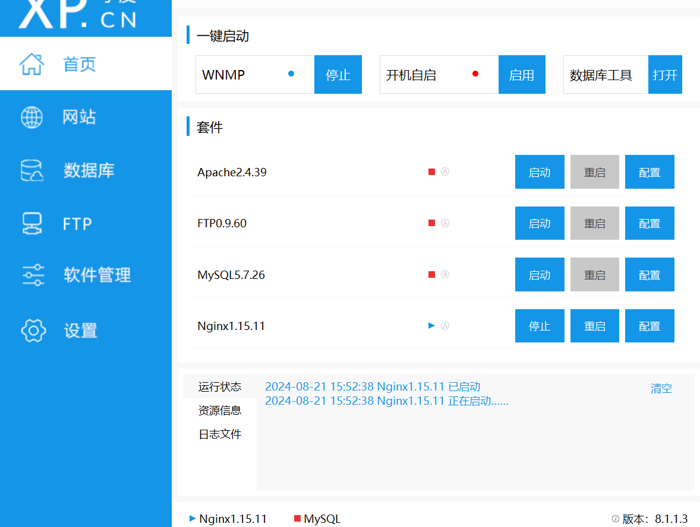
点击网站-管理-打开根目录，将题目给的文件拖进去即可
访问http://localhost:80即可得到flag
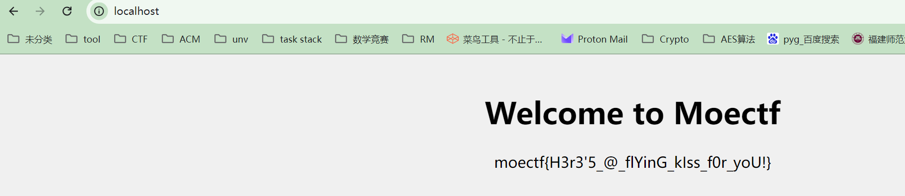
flag:moectf{H3r3'5_@_flYinG_kIss_f0r_yoU!}
弗拉格之地的入口 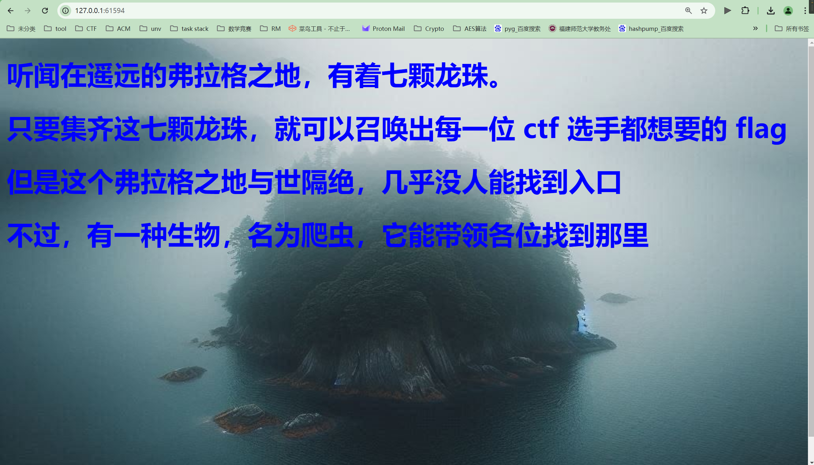
爬虫？写了个爬虫，什么额外的东西都没有爬下来
问问ai，他说
1 在运行爬虫前，请务必检查目标网站的robots.txt文件，确保您的行为符合该网站的规定。此外，频繁的请求可能会对网站服务器造成负担，因此在实际应用中应考虑添加适当的延时或其他更复杂的逻辑来避免被封禁。
那我们检查一下robots.txt，发现里面提到了一个文件
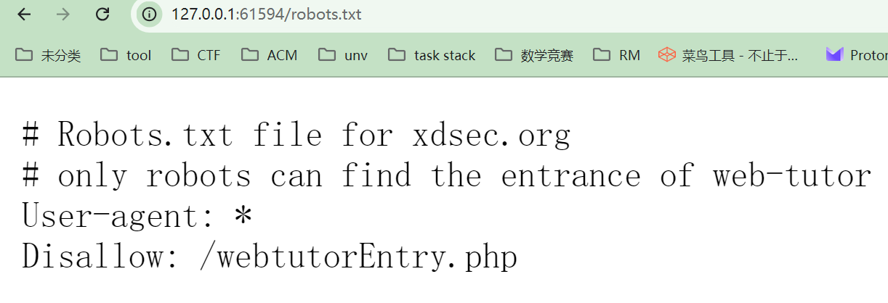
我们直接访问一下/webtutorEntry.php，然后就得到了flag
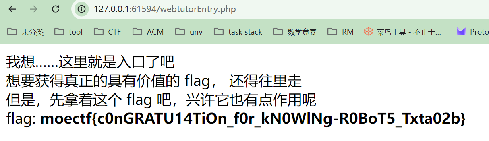
flag:moectf{c0nGRATU14TiOn_f0r_kN0WlNg-R0BoT5_Txta02b}
垫刀之路01: MoeCTF？启动！ 回到根目录，看到一个flag文件，打开
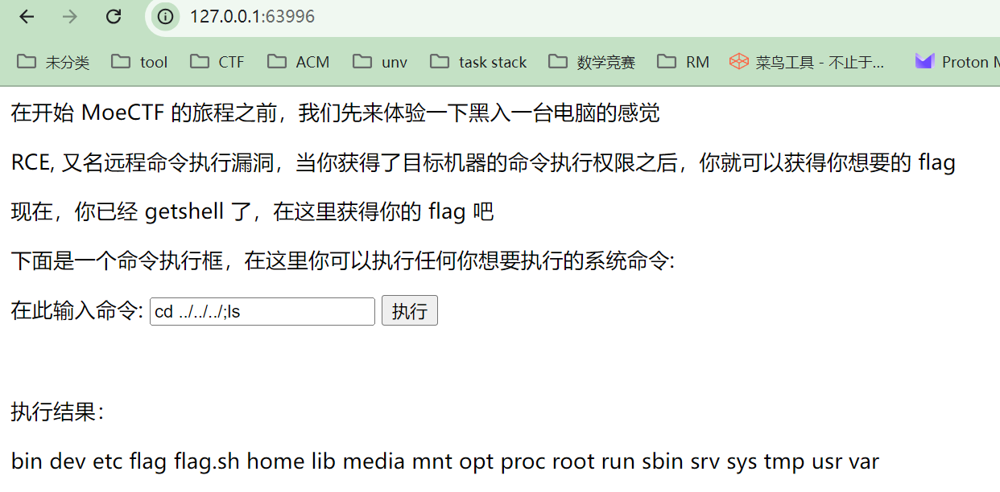
得到提示检查环境变量
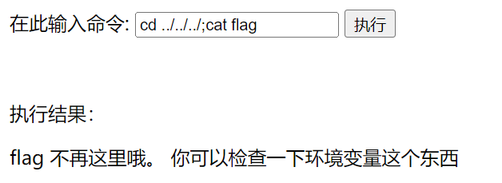
输入env检测环境变量，得到flag
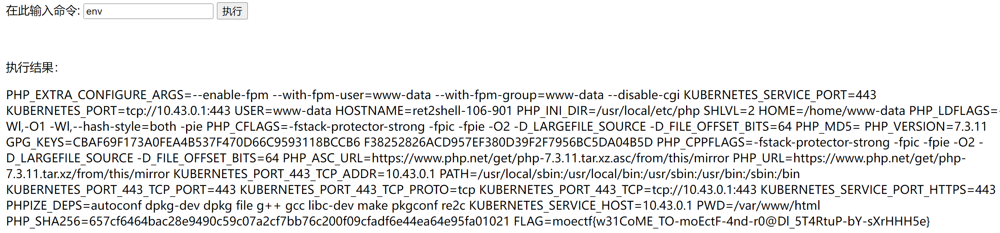
flag:moectf{w31CoME_TO-moEctF-4nd-r0@Dl_5T4RtuP-bY-sXrHHH5e}
ez_http ProveYourLove 弗拉格之地的挑战 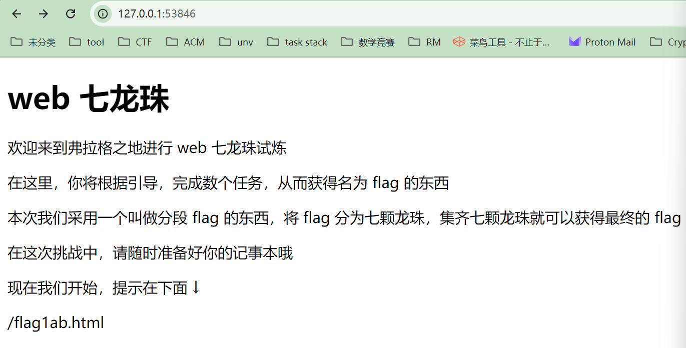
直接访问http://127.0.0.1:53846/flag1ab.html
点击F12得到第一段flag
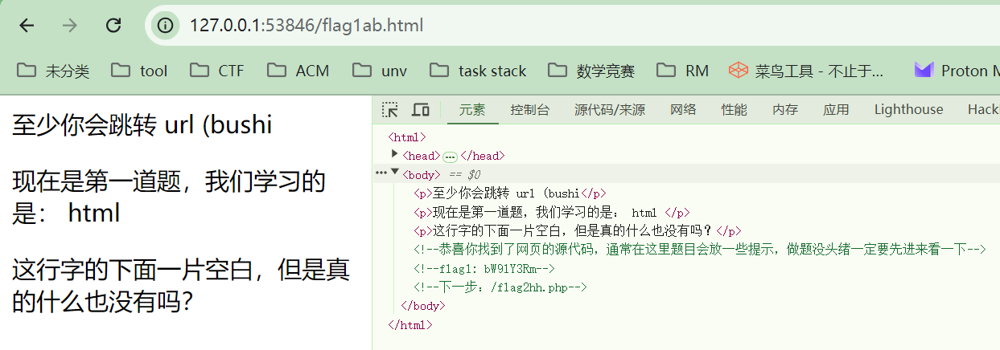
flag1: bW9lY3Rm
然后访问http://127.0.0.1:53846/flag2hh.php
服务器通过网络传输过来的，除了这个页面，还有什么？，F12打开网络在响应标头找到flag2
flag2：e0FmdEV
然后访问http://127.0.0.1:53846/flag3cad.php
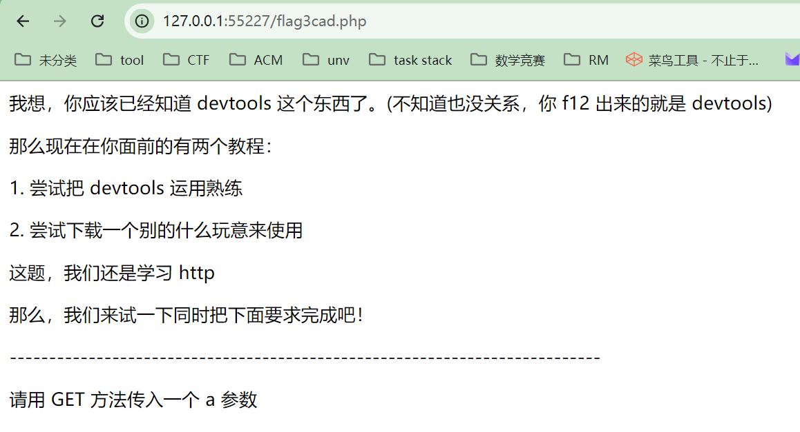
使用hackbar传入
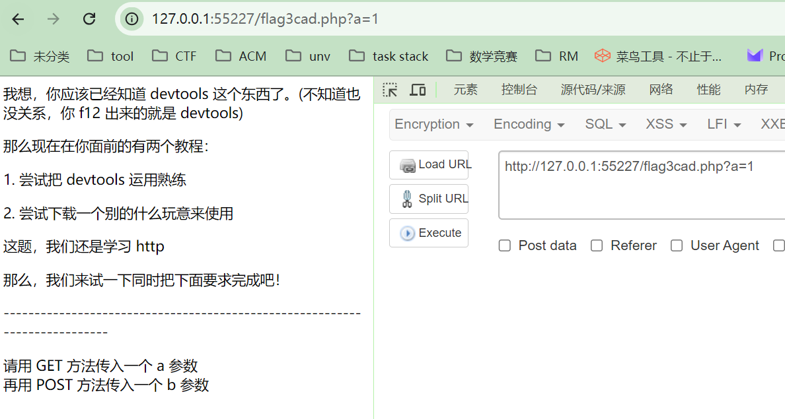
然后传入b参数
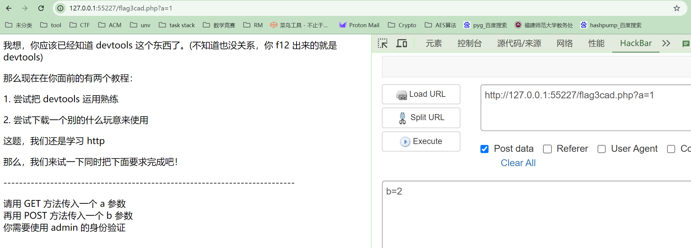
元素页面有提示你知道 cookie 吗？
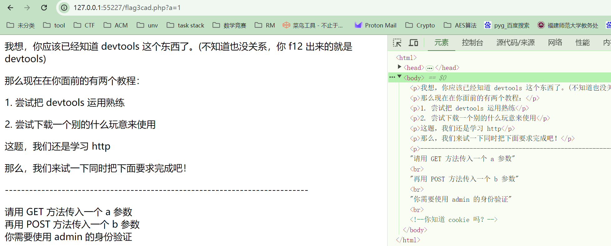
然后就不知道怎么做了
ImageCloud前置 垫刀之路02: 普通的文件上传 
.gif)
.gif)
.gif)
.gif)
.gif)
.gif)
.gif)
.gif)
.gif)
.gif)